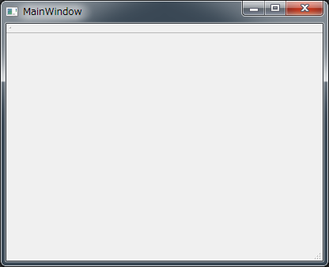
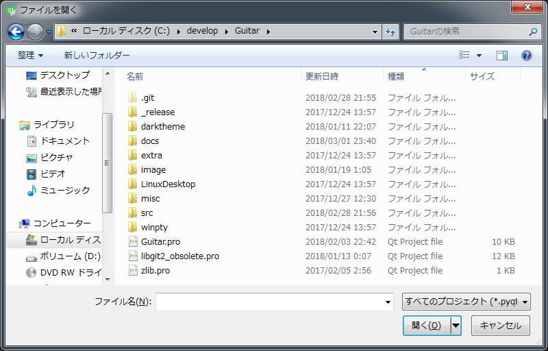
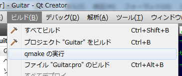

Guitarをビルドする
開発言語はC++、GUIフレームワークは Qt 5 を使用しています。
最初にコンパイラを準備します。
Windows
- Microsoft Visual C++ 2013 以降
- 無料のExpress版も使用可能です。その場合、「for Windows Desktop」と書かれているものをインストールします。
macOS
- Xcode
Linux
- GCC
Qtのダウンロードサイトからお使いのOSに合ったQt SDKをダウンロードし、インストールします。
とりあえず
Qtが初めての方の向けに、基本的な使い方を紹介します。Windows、macOS、Linuxのいずれでもほとんど同じです。Qt使用経験のある方は、この節は読み飛ばして結構です。
Qt Creator を起動します。
{kind=link}
[新しいプロジェクト] ボタンを押し、 [Qt ウィジェットアプリケーション] を選択します。

[名前]の欄に“Test”、[パス]には、作業用フォルダの場所を入力します。

筆者の場合、都合により、複数のキットを使い分けていますが、初めての場合は、一つだけ表示されていると思います。使用するキットのチェックボックスをONにして、右上の [詳細] をクリックします。 [プロファイル] は必要ないので、チェックボックスをOFFにします。（ONのままでも実害はないので、そのままでもいいです）

生成されるクラス名を確認します。ここの設定はそのままで、次へ進みます。
{kind=link}
プロジェクト作成の最終確認です。問題なければ [完了] ボタンを押します。

左下の三角ボタンを押すと、ビルドが開始し、成功したらプログラムが実行されます。

最初のアプリケーションが完成しました。

環境設定
Qt Creator の設定を行います。[ツール] → [オプション] を選択すると、オプションダイアログが開きます。

デフォルト設定では、ファイル名は「lowercase」な名前になりますが、Guitarでは「UpperCamelCase」なファイル名を採用していますので、[ファイル名を小文字にする] というチェックボックスをOFFにします。

[ビルドと実行] の [一般] タブにある、 [既定のビルドディレクトリ] の設定を変更します。
Windowsの場合“../_build_%{CurrentProject:Name}”にします。これはグローバルの設定なので、変えたくない場合は、後でプロジェクトの設定で“../_build_Guitar”などにします。
{kind=link}
LinuxやmacOSの場合、ビルドディレクトリは 「../_build_%{CurrentProject:Name}_%{CurrentBuild:Name}」がおすすめです。そのような設定にすると /home/<username>/develop/_build_Guitar_Release|Debug の様になります。

一応、次のようなコーディングスタイルを採用しています。
- ハードタブ（半角4文字幅推奨）
上に挙げたのは、グローバルの共通設定ですが、プロジェクト毎にも設定箇所があります。

[エディタ]の設定、[コードスタイル]の設定を確認します。
ソースコードを取得する
作業用フォルダを作成します。各自好みの場所で構いません。筆者の場合、Windowsでは C:\develop 、Linuxでは /home/soramimi/develop としています。
Guitar
 https://github.com/soramimi/Guitar にアクセスします。
https://github.com/soramimi/Guitar にアクセスします。

右にある[Clone or download]を押すと、ソースコードを取得するためのアドレスが表示されます。
HTTPSを使用する場合
C:\develop>git clone https://github.com/soramimi/Guitar.git
SSHを使用する場合
C:\develop>git clone git@github.com:soramimi/Guitar.git
クローンしたフォルダに 2個のプロジェクトファイル（*.pro）があるのを確認しておきます。

依存ライブラリ
zlib
圧縮されたファイルの伸張処理でzlibを使用します。Qtアプリからzlibを利用するためには以下のような方法があります。
- Qt SDK に同梱されているzlib
- OSにインストールされているzlib
- 公式配布されているzlib
- GitHubで公開されているzlib
どのzlibを利用するかによって、Guitarのクローンフォルダにあるmyzlib.hを書き換えます。
Qt SDK に同梱されているzlib
一応、最も推奨されている（ことになっているらしい）方法ですが、うまくいかない事例が報告されています。
#include <QtZlib/zlib.h>
Qt SDKのインストールのしかたによって QtZlib/zlib.h があったりなかったりします。ファイルが見つからないなどのエラーが出る場合は別の方法を試してみます。
OSにインストールされているzlib
Linuxなどでは、ほぼ間違いなくzlibはインストールされています。ただし、開発用パッケージは入っていないかもしれません。Debian系では、以下のようにしてインストールします。
$ sudo apt-get install zlib1g-dev
ヘッダファイルは次のようにします。
#include <zlib.h>
この方法では、Guitarのプロジェクトファイル（Guitar.pro）で、明示的に libz.so をリンクするように指定する必要があります。
unix:LIBS += -lz
公式配布されているzlib
ヘッダファイルは次のようになります。
#include "../zlib-1.2.11/zlib.h"
ライブラリを自前ビルドする必要があり、面倒なので、この方法はおすすめしません。
GitHubで公開されているzlib
zlibをクローンします。
C:\develop>git clone https://github.com/madler/zlib.git
Guitarとzlibを同じ階層に配置します。
- C:\develop
- Guitar
- zlib
Guitarをクローンしたフォルダに zlib.pro がありますので、これを Qt Creator で開きます。そして、[デバッグ]版と[リリース]版をビルドします。
zlibは（特にUnix系の場合）OSにインストール済みのはずなので、zlibの自前ビルドは明らかに無駄なのですが、この方法が file not found などのエラーが発生しにくいので、マルチプラットフォームの移植性の観点から、一応この手順をGuitarにおける推奨ということにしています。
OpenSSL
ウェブサイトにhttpsでアクセスするため、ソケットとOpenSSLを使用しています。
Windows
https://www.openssl.org/source/ からOpenSSLをダウンロードします。1.1系には対応していません。1.0系の最新版を使用してください。本稿執筆時点（2017-03-09）での最新版は openssl-1.0.2k.tar.gz です。ビルド方法は INSTALL.W32 を参照してください。GuitarではOpenSSLが C:\openssl にインストールされている想定でプロジェクトファイルを記述していますので、ビルド前のConfigureスクリプトの実行で、インストール先を指定する必要があります。OpenSSLのビルドにはperlが必要です。ない場合は ActivePerl などをインストールします。
> perl Configure VC-WIN32 --prefix=c:\openssl
もし他の場所にインストールした場合、Guitar.proを修正する必要があります。
win32:INCLUDEPATH += C:\openssl\include win32:LIBS += -LC:\openssl\lib
ビルドが完了したOpenSSLの中で、必要なファイルは libeay32.dll と ssleay32.dll です。 C:\openssl\bin にあります。あとで Guitar のビルドが完了したら、ビルド先フォルダにこれらのファイルをコピーする必要があります。
Linux
Debian系のLinuxの場合 libssl-dev をインストールしておきます。
$ sudo apt-get install libssl-dev
※他のLinuxでのインストール方法は確認していません。各自お調べください
リンカのオプションに -lssl -lcrypto が必要です。（Guitar.proにはそのように記述しています）
macOS
最近のmacOSでは標準でOpenSSLが入らなくなったようです。共有ライブラリの読み込みパス解決の問題への対応が面倒なので、自前ビルドしてスタティックリンクしています。1.1系は未対応なので、1.0系の最新版をチェックアウトします。
$ git clone https://github.com/openssl/openssl.git $ cd openssl $ git checkout -b OpenSSL_1_0_2-stable origin/OpenSSL_1_0_2-stable $ ./Configure darwin64-x86_64-cc --prefix=/usr/local $ make -j4 $ sudo make install
ビルドの準備
prepare.rb
バージョン情報やリソーススクリプトを自動生成するための prepare.rb というスクリプトファイルがあります。Qt Creator でプログラム本体をビルドする前に、このスクリプトを実行しておく必要があります。実行にはRubyが必要です。
C:\develop\Guitar>ruby prepare.rb
以下のファイルが作成されます。
- version.c … バージョン情報ダイアログボックスで表示する値を定義します
- win.rc … Windows用アプリのリソースを定義します
- Info.plist … macOS用アプリの共通設定を定義します
プロジェクトを開く
Qt Creator の「ようこそ」の画面で、右上の[プロジェクトを開く]ボタンを押します。
クローンした場所に、 Guitar.pro があります。
Guitarのビルド
Guitar.pro を開き、 Qt Creator の左にある三角ボタンを押すか、Ctrl+R（実行）を押すと、ビルドと実行が行われます。ビルドだけして、実行したくない場合は、Ctrl+Bを押します。デバッガ上で実行するには、デバッグ開始ボタンかF5キーを押します。
Windowsの場合
OpenSSLの libeay32.dll と ssleay32.dll を、Guitar.exe と同じフォルダにコピーしておく必要があります。これを忘れた場合 Guitar.exe が実行できずに即座に終了します。
失敗する場合
よくあるのが、prepare.rbを実行し忘れて、 version.c が見つからないというエラーです。前述した「ビルドの準備」の操作を行うと version.c が作成されます。自動では行われないので、手作業でやる必要があります。
追加したソースがコンパイルされないとき
version.c を生成した場合もそうですが、リポジトリから pull したら新しいファイルが追加されていたときや、新しいクラス（のファイル）を追加したとき、そのままビルドすると、増えたファイルがコンパイルされずに、いろいろ見つからないというエラーが出ることがあります。そんなときは、Qt Creator の [ビルド]→[qmake の実行] を行ってください。追加したファイルがビルドされない問題は、大抵これで解消されます。
